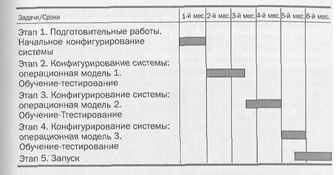

Методология быстрого проекта может быть рекомендована малым и средним предприятиям (100-400 человек) или предприятиям с простой структурой и операциями. Эта методология может применяться прежде всего предприятиями новой формации, предприятиями, имеющими ограниченные ресурсы под проект, а также предприятиями, не планирующими проводить коренные бизнес-преобразования и стремящимися получить результаты как можно быстрее. Предприятия, осуществляющие «второе внедрение», т.е. замену существующей ERP-системы более новой, также могут использовать такой подход. Вместе с тем нельзя не отметить, что успех такого проекта невозможен без соблюдения следующих условий:
Без выполнения указанных преимуществ риск подобного проекта значительно превышает
ожидаемые положительные результаты.
Примерный график проекта с указанием некоторых задач к выполнению представлен
ниже. Отметим, что, несмотря на излагаемые ниже общие подходы, конфигурация
проекта для каждого конкретного предприятия, выбирающего данную методологию
внедрения, будет различной.
Ниже приводится краткое описание указанных этапов.
Работы этапа аналогичны работам первого этапа классического варианта, за исключением работ по конфигурированию системы. Уже на начальном этапе проекта начинается моделирование и построение будущей системы предприятия. Выполняются эти работы, как правило, внешними консультантами.
 |
Задачи:
Обучение, разработка, моделирование и тестирование выбранных бизнес-процессов на реальных данных предприятия с использованием системы.
На этих этапах внешние консультанты проводят обучение группы внедрения, в ходе которого oсущecтвляeтcя тестирование в системе только тех бизнес-процессов, которые подлежат автоматизации в рамках проекта. Используется ступенчатая методология: этап 2 — построение в целом операционной модели предприятия 1. Далее, в ходе этапа 3, выполняются действия по доработке модели, строится операционная модель предприятия 2, на которой проводится обучение группы внедрения и тестирование соответствующих функций. В зависимости от сложности бизнес-процессов предприятия и особенностей конкретной ERP-системы операционная модель может быть построена уже на первом подходе или могут понадобиться еще один-два последовательных приближения. Непостроение модели после третьего подхода свидетельствует о том, что методология проекта была выбрана неправильно, т.е. система не так легко «ложится», как казалось в начале, либо предприятие не готово к такому проекту. Задача опытного консультанта — вовремя распознать эти тенденции и перейти, пока непоздно, к классической схеме внедрения.
На завершающем построение и тестирование модели этапе членами группы внедрения сразу же разрабатываются рабочие инструкции для конечных пользователей. Результаты тестирования системы могут фиксироваться, после чего предприятие получит документ, в котором описаны принципы функционирования системы на предприятии. В ходе этих этапов также выполняются действия по разработке дополнительных отчетных форм, утилит и функций. Функции, тестирование которых дало положительный результат, запускаются в промышленную эксплуатацию.
На этапе Запуск осуществляется распределение и конфигурирование рабочих мест, обучение конечных пользователей, ввод в систему всех оперативных данных. На этом же этапе может проводиться дополнительное тестирование (тестирование интерфейсов, например) и начинается работа в «живой» системе.
Обеспечение точности и целостности данных для работающих функций системы
Работы по обеспечению целостности данных системы актуальны для любой методологии
внедрения. К ним нужно приступать параллельно с началом промышленной эксплуатации
системы. Отметим, что данный этап критичен для эффективного использования системы.
В случае невыполнения описанных ниже действий никакие самые совершенные методики
и процедуры использования системы не дадут желаемого результата.
Задача. Добиться корректного и оперативного отображения фактического состояния предприятия в ERP-системе. Под этим подразумевается:
Ответственные. Весь персонал предприятия, использующий ERP-систему.
Сроки. С началом промышленной эксплуатации системы и постоянно, пока работает система.
Контролируемый результат
Контроль результатов может осуществляться следующим образом:
Комментарий. Целостность данных критична для эффективного использования системы.
Поэтому необходимо приложить все усилия для обеспечения корректности информации.
Для достижения этой цели оправданы даже самые жесткие административные методы
(часто они — самые действенные).